For this project I decided to analyze news data taken from the News API which gathers news articles across the internet from various news outlets. My data consists of 73,133 news articles in total. Each record has information regarding its source, the author, the title, a description of the text, its url, when it was published, a sumarization of its content and its full text as well.
For this project I hope to analyse the various articles for stylistic differences between the various news outlets and across the most prominent writers. In the future it would be possible with enough data, to have an accurate description of a news outlets writing style, and sentiment so as to identify fake articles and disinformation. This could potentially be replicated with prominent journalists who have a corpus of articles sufficient to be analyzed as well.
To better understand where our articles are coming from, we will need to look at a plot of all our news sources.
news_df %>%count(source_name) %>%ggplot(aes(x = source_name, y = n)) +geom_bar(stat ="identity") +coord_flip() +xlab("Source Name") +ylab("Count") +ggtitle("Count of Articles by Source Name")
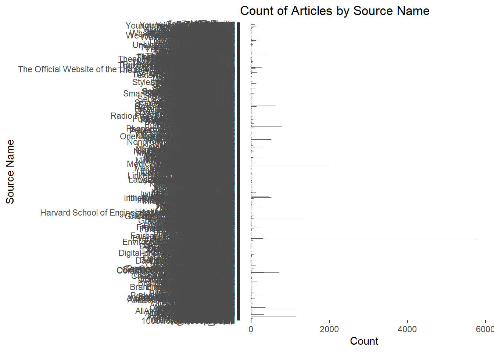
As we can see there are far too many news sources to graph all at once. Maybe it will be better to take a count of how many sources we pulled from and then just plot the top 20.
So based on our graph above, we can see that we have a mix of global news agencies from our data. The news source with the most articles in our data is ETF Daily, which is out of new Jersey, followed by Biztoc out of Delaware, followed by some more household names, like Forbes, the BBC and The Times of India.
Now that we have looked at the news agencies, lets look at the journalists themselves.
So this isn’t so surprising. We would imaging that journalists write several, if not hundreds, of articles for their employer each year. Additionally, some writers can work for more than one news outlet at a time.
news_df %>%count(author) %>%arrange(desc(n)) %>%top_n(20,n) %>%ggplot(aes(x =reorder(author, -n), y= n))+geom_bar(stat ="identity", fill ="blue")+coord_flip() +xlab("Authors") +ylab("Count") +ggtitle("Top 20 Authors in our data")
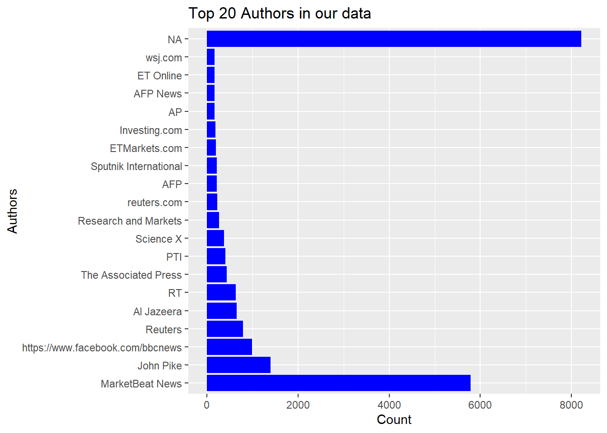
So this graph is interesting. It appears that there are a large amount of articles in our data that do not have an author associated with them. Also, several articles simply list the news outlet as the author. It would be interesting to see some top names if we can go ahead and remove those that list the organization.
Now why dont we look at the time period from when these articles were published.
ggplot(news_df, aes(x = published_at)) +geom_histogram(binwidth =86400, fill ="blue", color ="black") +# binwidth set to one day (in seconds)xlab("Publication Date") +ylab("Number of Articles") +ggtitle("Distribution of Articles Over Time") +theme(axis.text.x =element_text(angle =45, hjust =1))
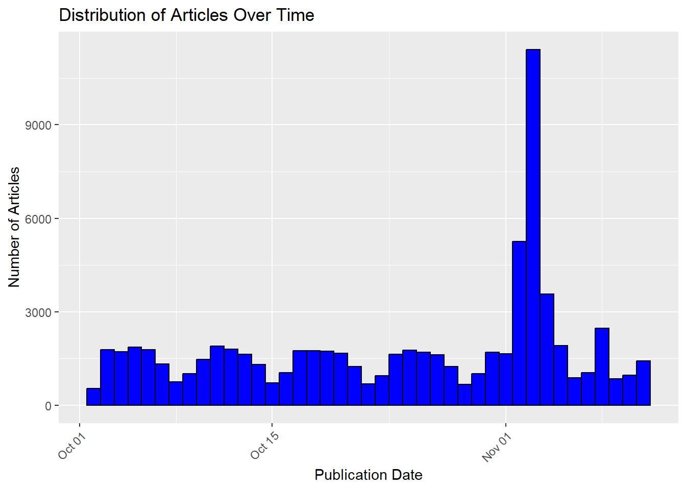
Because the data is so large, we will have to sample a portion of it to make it more manageable to conduct our analysis on.
We want to do topic modeling next to see what topics our top news stories can be sorted into. First we will try 10 topics and then we will cut it down from there.
news_tidy <-tidy(news_lda,matrix ="beta")# Make a plot of the top words in # each topicnews_tidy %>%group_by(topic) %>%# group_by the topic , keep the top 10 words each ordered by betaslice_max(order_by = beta,n =10) %>%ungroup() %>%arrange(topic,-beta)
# A tibble: 100 × 3
topic term beta
<int> <chr> <dbl>
1 1 2023 0.00523
2 1 stock 0.00479
3 1 world 0.00404
4 1 2024 0.00403
5 1 time 0.00362
6 1 gaza 0.00344
7 1 cup 0.00306
8 1 apple 0.00302
9 1 home 0.00279
10 1 management 0.00260
# ℹ 90 more rows
news_top_terms <- news_tidy %>%group_by(topic) %>%# group_by the topic, keep the top 10 words each ordered ,by betaslice_max(order_by = beta,n =10) %>%ungroup() %>%arrange(topic,-beta)news_top_terms %>%ggplot() +geom_col(aes(x = beta, y =reorder_within(term,beta,topic),#reorder_within is for ordering#bars within facetsfill =factor(topic)),show.legend =FALSE) +facet_wrap(~factor(topic),scales ="free") +scale_y_reordered()
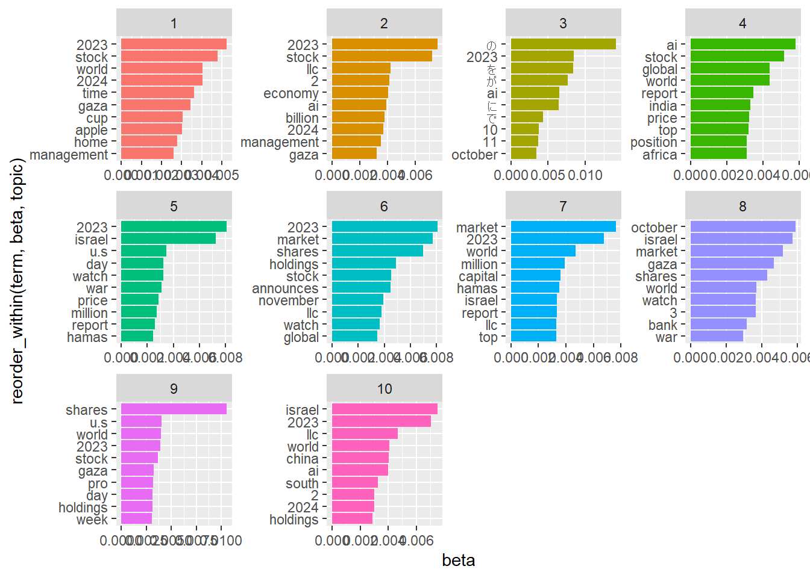
So from this chart alone it is difficult to decipher what these 10 topics could be, although we do see certain trends appearing. Because the news is from early October and goes into the first week of November, we see a lot of topics referencing the war in Israel. Additionally we see a lot of references to the stock market and economy, but at this point there are many overlaps as well as several words and numbers that should be deleted for better comprehension.
Here we will try and look at just 4 topics within our data.
news_lda <-LDA(news_dtm,k =4,control =list(seed =123))news_tidy <-tidy(news_lda,matrix ="beta")news_tidy %>%group_by(topic) %>%# group_by the topic , keep the top 10 words each ordered by betaslice_max(order_by = beta,n =10) %>%ungroup() %>%arrange(topic,-beta)
# A tibble: 40 × 3
topic term beta
<int> <chr> <dbl>
1 1 2023 0.00542
2 1 israel 0.00497
3 1 gaza 0.00409
4 1 stock 0.00396
5 1 watch 0.00381
6 1 world 0.00365
7 1 cup 0.00288
8 1 war 0.00283
9 1 2024 0.00257
10 1 management 0.00240
# ℹ 30 more rows
news_top_terms <- news_tidy %>%group_by(topic) %>%# group_by the topic, keep the top 10 words each ordered ,by betaslice_max(order_by = beta,n =10) %>%ungroup() %>%arrange(topic,-beta)news_top_terms %>%ggplot() +geom_col(aes(x = beta, y =reorder_within(term,beta,topic),#reorder_within is for ordering#bars within facetsfill =factor(topic)),show.legend =FALSE) +facet_wrap(~factor(topic),scales ="free") +scale_y_reordered()
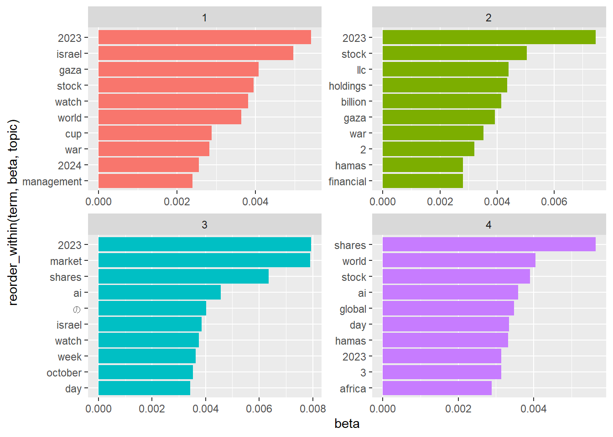
news_tidy <-tidy(news_lda, matrix ="beta")excluded_terms <-c("2023", "2024", "2", "3","4","llc") news_top_terms <- news_tidy %>%filter(!term %in% excluded_terms) %>%group_by(topic) %>%slice_max(order_by = beta, n =10) %>%ungroup() %>%arrange(topic, -beta)news_top_terms %>%ggplot() +geom_col(aes(x = beta, y =reorder_within(term, beta, topic),fill =factor(topic)),show.legend =FALSE) +facet_wrap(~factor(topic), scales ="free") +scale_y_reordered() +labs(x ="Beta", y ="Term", title ="Top Terms in Each Topic (Filtered)") +theme_minimal()
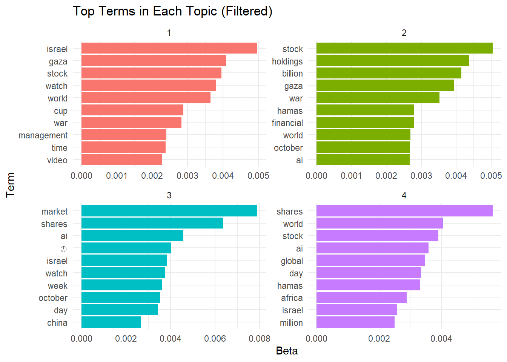
At this point even if we took some of the stopwords out, we can see that our 4 topics still share a ton of overlap. There are several references to the war in Israel and Gaza, as well as several topics that have references to the stock market.
Now that we have seen the topics modeled from looking at the titles of our news articles, let’s look at a plot of all the top bigrams in our titles to see what is related.
# create our bigramsbigram_counts <- news_df %>%unnest_tokens(bigram, title, token ="ngrams", n =2)# Separate bigrams into individual wordsbigram_separated <- bigram_counts %>%separate(bigram, c("word1", "word2"), sep =" ")# Count co-occurrences and remove stop wordsbigram_cooccurrences <- bigram_separated %>%filter(!word1 %in% stop_words$word, !word2 %in% stop_words$word) %>%count(word1, word2, sort =TRUE)# Plot the top N bigramstop_n <-20# Adjust this number as neededggplot(head(bigram_cooccurrences, top_n), aes(x =reorder(paste(word1, word2), n), y = n)) +geom_col(fill ="blue") +coord_flip() +# Flipping coordinates for horizontal barslabs(x ="Bigram", y ="Frequency", title ="Top Bigrams in Titles") +theme_minimal()
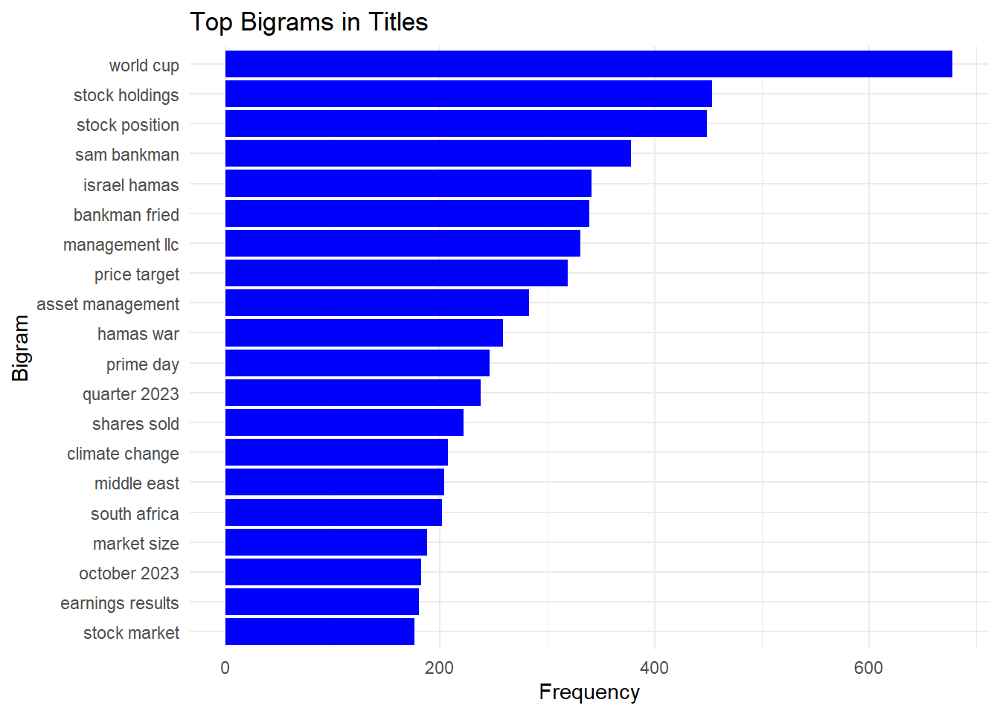
Now lets look at how connected our various news topics are to each other by creating a network diagram.
Now let’s do some sentiment analysis on the articles themselves. First we need to decide on the sentiment dictionary to use, here I’ve decided to use affin. Then we will have to tokenize our words.
sentiments <-get_sentiments("afinn")words_from_titles <- news_df %>%unnest_tokens(word, content)# Join with AFINN sentimentsarticle_sentiments <- words_from_titles %>%inner_join(get_sentiments("afinn"), by ="word")
Now that we’ve performed our sentiment analysis we need to select our top 10 negative and positive words.
top_positive_words <- article_sentiments %>%filter(value >0) %>%group_by(word) %>%summarize(total_value =sum(value)) %>%slice_max(order_by = total_value, n =10)# Top 10 negative wordstop_negative_words <- article_sentiments %>%filter(value <0) %>%group_by(word) %>%summarize(total_value =sum(value)) %>%slice_min(order_by = total_value, n =10)
top_words <-bind_rows(top_positive_words, top_negative_words) %>%arrange(desc(total_value))# Plotggplot(top_words, aes(x =reorder(word, total_value), y = total_value, fill = total_value >0)) +geom_bar(stat ="identity") +coord_flip() +scale_fill_manual(values =c("red", "blue")) +labs(x ="Word", y ="Total Sentiment Score", title ="Top 10 Positive and Negative Words in Article Titles") +theme_minimal() +theme(legend.position ="none")
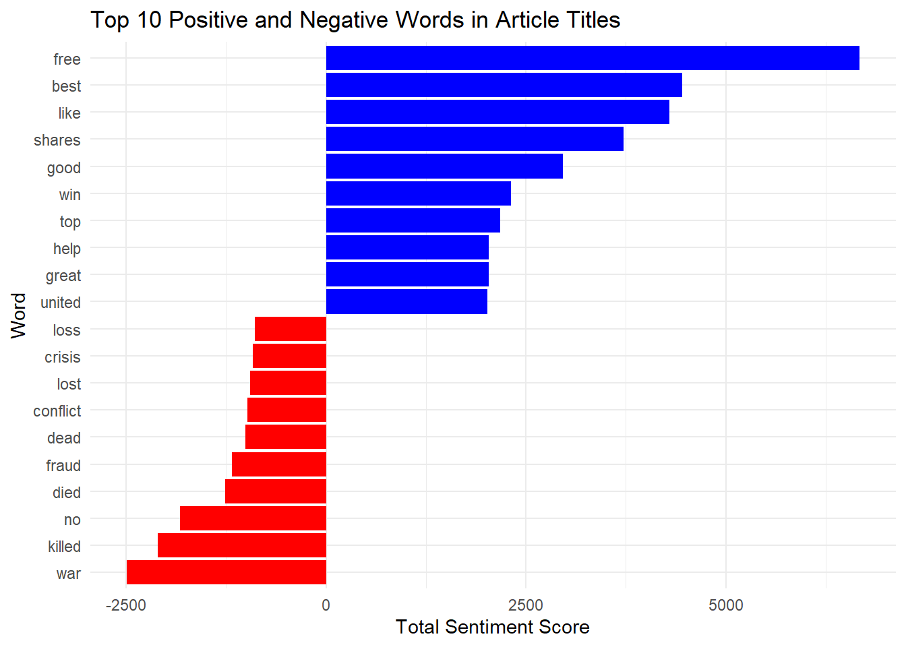
Now lets try to just hone in one one news source to get an idea of its reporting. For this we can look at BBC News as it is one of the most popular news organizations in the world and reports on a variety of topics.
To do this first, we will have to filter for articles with a source_name of BBC News.
bbc_news_articles <- sampled_news_df %>%filter(source_name =="BBC News")bbc_dtm <- bbc_news_articles %>%unnest_tokens(word, content) %>%anti_join(stop_words, by ="word") %>%count(article_id, word) %>%cast_dtm(document = article_id, term = word, value = n)
Then we will have to create our lda model and define k = 5 so that we are creating 5 topics models. After that we will extract the top terms in each of our topics and we will then convert it to a dataframe.
lda_bbc <-LDA(bbc_dtm, k =5, control =list(seed =123))bbc_tidy <-tidy(lda_bbc, matrix ="beta")#This will select the top 10 terms in our articlesbbc_top_terms <- bbc_tidy %>%group_by(topic) %>%top_n(10, beta) %>%ungroup() %>%arrange(topic, -beta)
ggplot(bbc_top_terms, aes(x = beta, y =reorder_within(term, beta, topic), fill =factor(topic))) +geom_col(show.legend =FALSE) +facet_wrap(~factor(topic), scales ="free_y") +scale_y_reordered() +labs(x ="Beta", y ="Term", title ="Top 10 Terms in Each Topic for BBC News") +theme_minimal()
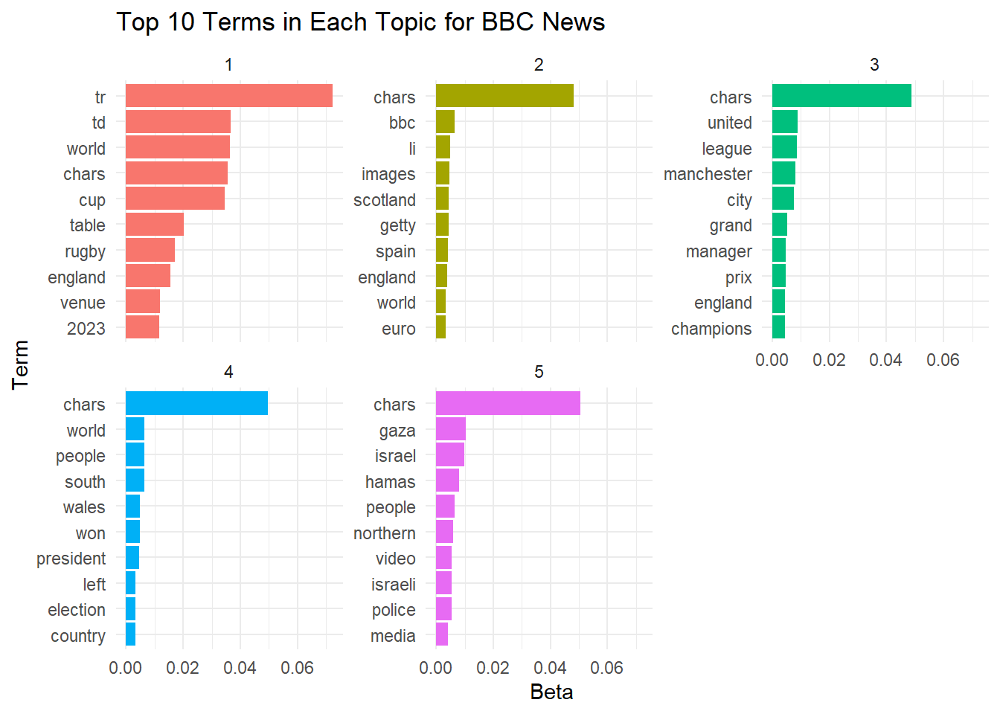
Now let’s clean this up. We have several words and abbreviations in the graph above that don’t make sense, so lets remove them and any numbers so we can get a better idea of what our topics are.
excluded_words <-c("chars", "tr", "td", "2023", "li", "getty", "video", "table","bbc") bbc_dtm <- bbc_news_articles %>%unnest_tokens(word, content) %>%filter(!word %in% excluded_words) %>%anti_join(stop_words, by ="word") %>%count(article_id, word) %>%cast_dtm(document = article_id, term = word, value = n)
lda_bbc <-LDA(bbc_dtm, k =5, control =list(seed =123))bbc_tidy <-tidy(lda_bbc, matrix ="beta")#This will select the top 10 terms in our articlesbbc_top_terms <- bbc_tidy %>%group_by(topic) %>%top_n(10, beta) %>%ungroup() %>%arrange(topic, -beta)
ggplot(bbc_top_terms, aes(x = beta, y =reorder_within(term, beta, topic), fill =factor(topic))) +geom_col(show.legend =FALSE) +facet_wrap(~factor(topic), scales ="free_y") +scale_y_reordered() +labs(x ="Beta", y ="Term", title ="Top 10 Terms in Each Topic for BBC News") +theme_minimal()
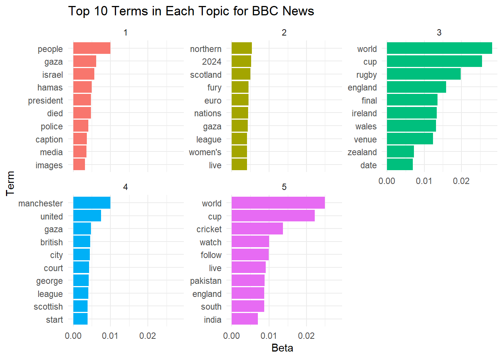
So after refining our list, it still seems that there is a lot of overlap within our topics. it seems we have a lot of rugby themes relating to the Rugby World cup which ended in October, as well as some other topics such as cricket, Gaza and Israel. So lets see if we shrink this down to 3 topics.
lda_bbc <-LDA(bbc_dtm, k =3, control =list(seed =123))bbc_tidy <-tidy(lda_bbc, matrix ="beta")#This will select the top 10 terms in our articlesbbc_top_terms <- bbc_tidy %>%group_by(topic) %>%top_n(10, beta) %>%ungroup() %>%arrange(topic, -beta)ggplot(bbc_top_terms, aes(x = beta, y =reorder_within(term, beta, topic), fill =factor(topic))) +geom_col(show.legend =FALSE) +facet_wrap(~factor(topic), scales ="free_y") +scale_y_reordered() +labs(x ="Beta", y ="Term", title ="Top 10 Terms in Each Topic for BBC News") +theme_minimal()
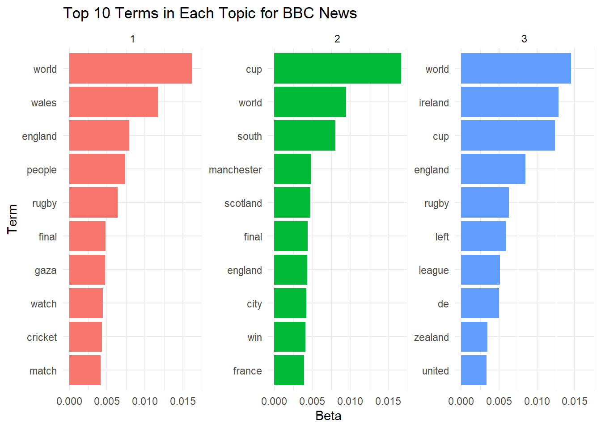
So here are our three main topics. Again there is still a lot of overlap. It seems the Rugby World Cup is referenced in each topics and there are the same references to Gaza and cricket sprinkled throughout.
Now maybe we can look at this a different way. Perhaps we can get an idea of what the top news sources reporting style is like by depicting their sentiments. This way we can grade news outlets on a scale of being very negative all the way to very positive. To do this we’ll try with the bing sentiment dictionary to see how it differs from the affin dictionary we used before.
The first thing we will need to do is to calculate the sentiment scores from the ‘content’ column of our data.
bing_lexicon <-get_sentiments("bing")# this is where we will calculate the sentiment scores for each articlesentiment_scores <- sampled_news_df %>%unnest_tokens(word, content) %>%inner_join(bing_lexicon, by ="word") %>%group_by(article_id, source_name) %>%summarize(sentiment_score =sum(ifelse(sentiment =="positive", 1, -1)), .groups ='drop')
Now we want to get the sentiment scores for our top 5 news agencies.
average_sentiments <- sentiment_scores %>%group_by(source_name) %>%summarize(average_sentiment =mean(sentiment_score, na.rm =TRUE)) %>%ungroup()# Identifying top 5 sources (example by the number of articles)top_sources <- sentiment_scores %>%count(source_name) %>%top_n(5, n) %>%select(source_name)# Filter average sentiments for top sourcestop_source_sentiments <- average_sentiments %>%filter(source_name %in% top_sources$source_name)
ggplot(top_source_sentiments, aes(x =reorder(source_name, average_sentiment), y = average_sentiment, fill = source_name)) +geom_col() +coord_flip() +labs(x ="Source Name", y ="Average Sentiment Score", title ="Average Sentiment Scores of Top 5 Sources") +theme_minimal() +theme(legend.position ="none")
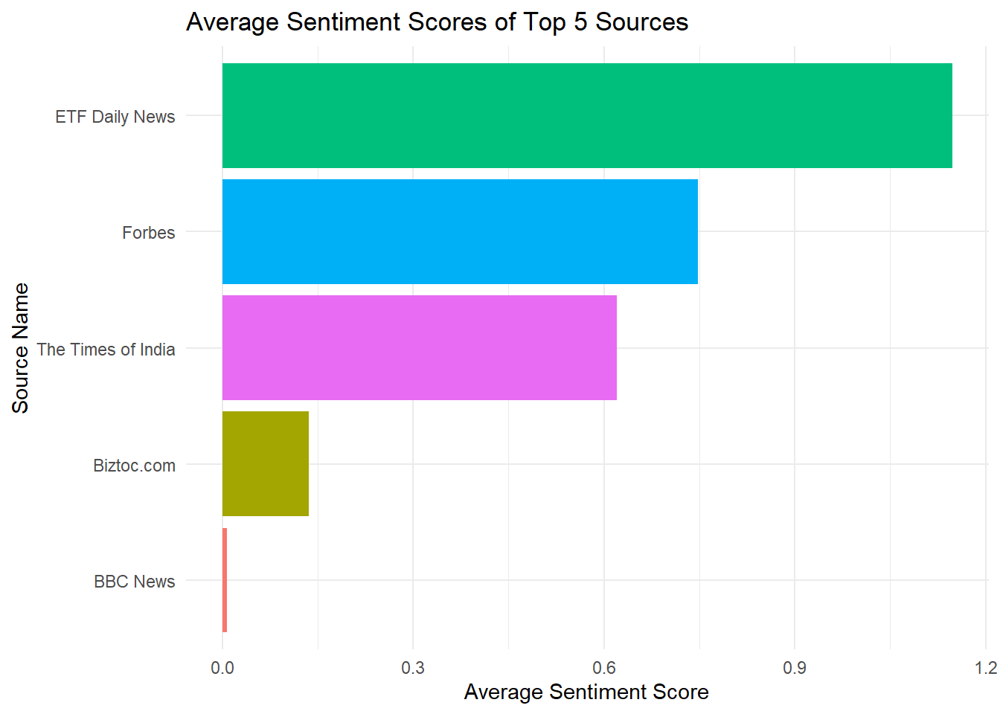
This graph is quite interesting. It shows us that our op 5 most cited news sources all trend more positive than negative. However, the scores are quite low, which means that they trend more neutral than anything. This makes sense as good journalism should be neutral, although that is not always the case. With respect to these 5 sources, ETF Daily news is the most positive, where BBC is almost at 0.0 which is precisely neutral.
Overall this dataset is quite large and there are so many other things we could do to better understand this data. If we had ratings for articles, we could do a little statistical analysis and try to see what factors lead to a highly rated article. We could analyze each news source and gather their sentiments and create a model that could also predict to which news source a body of text belongs. This could be helpful in identifying misinformation or false articles published online under the guise of an actual news agency, and could be used to flag these false or misleading articles.